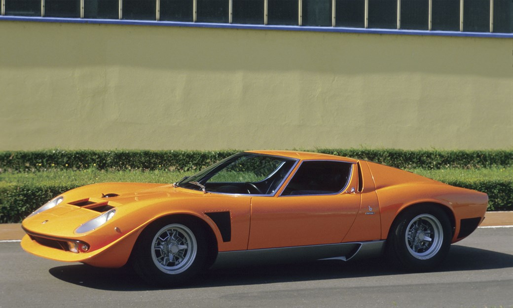

This is a website all about the school. I really don't like the school
Old man Lamborghini was never keen on racing (or supercars, in fact – he was more of a GT man) so the Miura never hit the track in anger. Lambo’s chassis engineer and test driver extraordinaire Bob Wallace had his own ideas though, building the Jota in his spare time as a ‘What If’ project. With special aircraft-spec alloy bodywork peppered with lift-cutting spoilers, experimental suspension and a reputed 440bhp squeezed from its V12, it was a bit of an animal. Although replicas have been built since, the original was destroyed in a fiery accident, thus sealing its wildchild status forever.